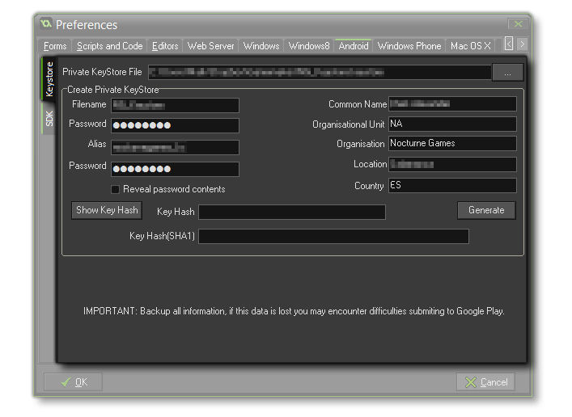
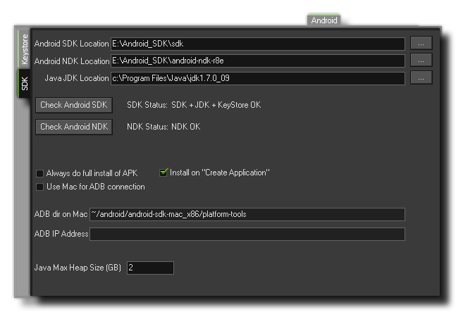

 For GameMaker: Studio to work with Android device, a number of things need to be set up. First, you must have installed the Android SDK along with the API packages required for your game to run (as well as a test device with Android installed), the Android NDK, and you must also have installed the Java SE Development Kit (JDK). Once you have them installed and updated you should set up your Web Server Preferences before continuing with the configuration of this tab. You can get up-to-date information on whgat version of the SDK and NDK is currently required from this helpdesk article: SDK Version Support.
The KeyStore is a file that will be used to "sign" all your Android apps - including those created for the Amazon Fire target platform - so please fill in all the details correctly:
- Name: This is the name of the KeyStore file. Note: This is not your name or the company name, but the name of the file to be generated!
- Password: Your security password for the KeyStore file which must be at least six characters long.
- Alias: This is another name that can be used for the KeyStore file and should be different to the name entered above.
- Password: The password for the alias file. Should be the same as the Name password.
- Common Name: This would normally be your name.
- Organisational Unit: The department within the company that you are a part of.
- Organisation: The name of your company.
- Location: The name of the town or city where you are based.
- Country: The standard two letter code for the country where you are based.
Once this information is filled in and you are happy with it,
press the button marked Generate for GameMaker:
Studio to create the necessary KeyStore file. This may take a
moment but once it is finished, you will see that the section
marked Private KeyStore File will have been updated to reflect the
new name that you have given it. Once this is done it normally will
not need to be changed again.
There is a further option here marked Show Key Hash.
Pressing this will generate two special security hash keys directly
linked to your Keystore file that some web sites require for
correct functionality (for example, Facebook, or Google Play for
the Sha1 hash). Should you need this, simply press the button, then
copy and paste the hash keys that are generated.
 The SDK Tab is where you supply details of the installed components that GameMaker: Studio needs to compile Android *.apk files.
- Android SDK Location: The location where you have installed the Android SDK. This should have been filled in automatically, but if not then you can use the button on the right to open a file browser and select the appropriate file location.
- Android NDK Location: The location where you have installed the Android NDK. As with the SDK, this should be filled in automatically but if not you can browse to the file location manually.
- Java JDK Location: The Location where you have installed the JDK. This should been filled in automatically, but if not then you can use the button on the right to open a file browser and select the appropriate file.
You should click the button marked Check Android SDK, as
this will validate all the information and inform you of any errors
(in which case you should revise all the information to make sure
it is correct). When everything checks out you should receive the
message "SDK + JDK + KeyStore OK".
There are a few final options at the bottom of the tab:
- Always do full install of APK: Flagging this will make GameMaker: Studio remove any previous runners of your game from your device, as well as all associated files (for example, *.ini files) from your test device before installing a new version of the game.
- Install on "Create Application": When this option is flagged, compiling a complete *.apk will install it automatically on any devices that are connected.
- Use Mac for ADB connection: Should you wish to connect your Android device to a Mac, you can click this option to have GameMaker: Studio connect to your Mac and test your games that way. Note that you must have set up the Mac Preferences correctly, have the Android SDK installed on the Mac and given the correct ADB directory (see below).
- ADB Directory on Mac: When you have the above option, Use Mac for ADB connection, enabled you can set the directory for ADB here.
- ADB IP Address: By default this is blank, but you can input a specific device IP and use this to force ADB to connect to that over Wifi rather than over USB for testing (useful for the Amazon Fire target platform, for example).
- Java Max Heap Size: Set the size of the Java Memory Heap for the Android JDK